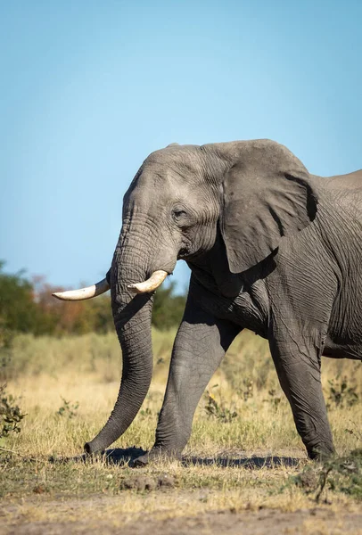

O que fazer no Kenya:
- Realizar um Safri em Masai Mara
- Visitar o Parque Nacional de Nairobi
- Relaxar na Diani Beach
- Relaxar na Watamu Beach
- Explorar o Hell's Gate National Park
- Conhecer a Cidade Velha de Lamu
- Explorar o Mount Kenya
- Visitar o Forte Jesus em Mombaça
- Andar de balão de ar quente em Maasai Mara
- Visitar o Mercado Maasai
- Visitar o Lago Naivasha

Comida a não perder:
- Pão Chapati
- Dengo
- Avocado - Versão típica de guacamole
- Ugali - Servido como acompanhamento
- Ovos cozidos com smokies e kachumbari
- Samosas - Recheadas de carne de bife, ndengu ou de batata e sempre com coentros
- Bhajia - Batatas cortadas as rodelas envolvidas em especiarias e farinha e depois fritas
- Mahindi – Espiga de milho grelhada
- Kuku - Frango Assado
Melhores cidades para visitar:
- Kijabe
- Nairobi
- Ngong
- Nanyuki
- Njabini
- Shamata
- Isukha
- Kiamaina